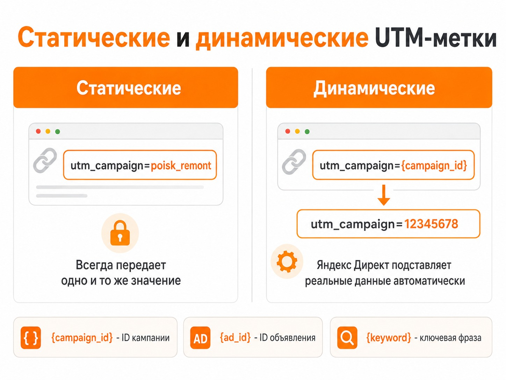
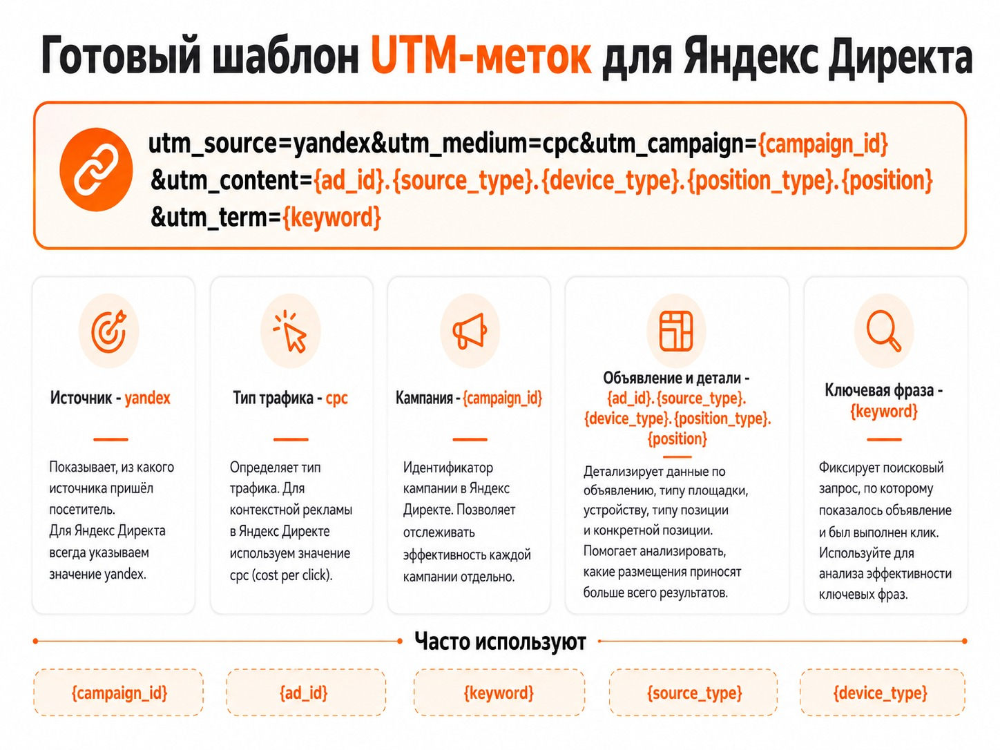

Блог о платном трафике
Как сгенерировать UTM-метки для Яндекс Директа
Для Яндекс Директа не обязательно вручную прописывать отдельную UTM-метку для каждого объявления. Удобнее создать один шаблон с динамическими параметрами. При клике Директ сам подставит номер кампании, объявления, ключевую фразу, площадку, устройство и другие данные.
Например, универсальная разметка может выглядеть так:
utm_source=yandex&utm_medium=cpc&utm_campaign={campaign_id}&utm_content={ad_id}.{source_type}.{device_type}.{position_type}.{position}&utm_term={keyword}
Ее можно собрать вручную или через любой генератор UTM-меток. Принцип работы у таких сервисов примерно одинаковый: указываете адрес страницы, источник трафика и нужные параметры, после чего получаете готовую ссылку.
В самом Яндекс Директе параметры URL сейчас можно задавать на уровне кампании, группы или отдельного объявления. Они автоматически добавляются к соответствующим ссылкам.
Зачем нужны UTM-метки в Яндекс Директе
UTM-метка добавляет к обычному адресу страницы информацию об источнике перехода.
Без разметки ссылка может выглядеть так:
https://site.ru/usluga/
С UTM:
https://site.ru/usluga/?utm_source=yandex&utm_medium=cpc&utm_campaign=123456
Для посетителя это по-прежнему та же страница. Для системы аналитики ссылка содержит дополнительную информацию.
С помощью UTM можно определить:
- из какого рекламного источника пришел человек;
- из какой кампании;
- по какому объявлению;
- по какой ключевой фразе;
- с Поиска или из РСЯ;
- с какого устройства;
- с какой площадки РСЯ;
- в каком регионе произошел показ.
Эти данные можно использовать в Яндекс Метрике, системах сквозной аналитики, CRM и других инструментах.
При этом UTM не заменяют внутреннюю разметку Яндекса. Например, во все рекламные ссылки Директ автоматически добавляет yclid - уникальный идентификатор клика, который помогает Метрике связать визит с конкретным переходом по рекламе.
Проверьте, что данные поступают корректно, в статье о проверке целей в Яндекс Метрике.
Из каких UTM-меток состоит ссылка
Чаще всего используются пять стандартных параметров.

| Метка | Что передает | Пример |
|---|---|---|
utm_source | источник трафика | yandex |
utm_medium | тип трафика | cpc |
utm_campaign | рекламную кампанию | {campaign_id} |
utm_content | объявление и дополнительные данные | {ad_id} |
utm_term | ключевую фразу | {keyword} |
Яндекс относит utm_source, utm_medium и utm_campaign к основным параметрам, а utm_content и utm_term используются для дополнительной детализации.
utm_source
Показывает источник трафика. Для Яндекс Директа обычно используют utm_source=yandex. Яндекс рекомендует использовать латиницу и единый регистр. Значение yandex в некоторых случаях может автоматически сокращаться до ya. Если важно сохранить одинаковую разметку во всех отчетах, можно изначально использовать другое постоянное обозначение источника.
utm_medium
Показывает тип трафика. Для контекстной рекламы обычно используют utm_medium=cpc. CPC означает платный трафик с оплатой за переход.
Не стоит каждый раз придумывать новые варианты вроде context, direct, advertising, paid и cpc. Лучше один раз выбрать систему обозначений и использовать ее во всех кампаниях. Иначе один источник начнет разбиваться в аналитике на несколько строк.
utm_campaign
Позволяет определить рекламную кампанию. Статический вариант: utm_campaign=poisk_moskva. Динамический: utm_campaign={campaign_id}. При клике вместо {campaign_id} Директ автоматически подставит настоящий ID кампании.
Можно использовать и utm_campaign={campaign_name_lat} - тогда будет передаваться название кампании в транслитерации. ID удобнее, если аналитика затем связывается с рекламным кабинетом автоматически: он однозначен и не меняется при переименовании кампании. Если отчеты анализируются в основном вручную, читаемое название кампании иногда удобнее.
utm_content
Эта метка обычно используется для информации об объявлении. Самый простой вариант: utm_content={ad_id}. Но в utm_content удобно передавать сразу несколько характеристик: utm_content={ad_id}.{source_type}.{device_type}. После клика здесь могут оказаться ID объявления, тип площадки и устройство пользователя.
Яндекс разрешает объединять несколько динамических параметров внутри utm_content, например через точку или вертикальную черту.
utm_term
Обычно используется для ключевой фразы: utm_term={keyword}. Например, если показ произошел по фразе настройка яндекс директ, Директ автоматически передаст ее в URL.
{keyword} относится именно к ключевой фразе, по которой произошло срабатывание объявления. Для автотаргетинга и семантических соответствий в Директе существуют отдельные параметры {match_type} и {matched_keyword}. Поэтому utm_term={keyword} удобно использовать в классических поисковых кампаниях с ключевыми фразами, но не стоит рассчитывать, что эта переменная одинаково информативна при любых типах таргетинга. Подробнее - в статье об автотаргетинге в Яндекс Директе.
Статические и динамические UTM-метки
Главное различие при настройке Яндекс Директа - статические и динамические значения.

Статическая метка всегда передает одно и то же значение: utm_campaign=poisk_remont. Что бы ни произошло при показе рекламы, в аналитике останется poisk_remont.
Динамическая метка utm_campaign={campaign_id} заменит значение в фигурных скобках на реальные данные в момент перехода. Например, utm_content={ad_id} может превратиться в utm_content=17382940123, а utm_term={keyword} - в utm_term=kupit_divan.
Именно поэтому для Яндекс Директа обычно удобнее динамическая разметка. Не нужно создавать сотни разных ссылок вручную.
Самые полезные динамические параметры Яндекс Директа
У Директа значительно больше динамических параметров, чем пять стандартных UTM. Их можно помещать внутрь UTM или передавать отдельными параметрами URL.
| Параметр | Что передает |
|---|---|
{campaign_id} | ID кампании |
{campaign_name_lat} | название кампании в транслитерации |
{ad_id} | ID объявления |
{gbid} | ID группы |
{keyword} | ключевая фраза |
{phrase_id} | ID ключевой фразы |
{source_type} | поиск или рекламная сеть |
{source} | конкретная площадка показа |
{device_type} | desktop, mobile или tablet |
{position_type} | тип рекламного блока на поиске |
{position} | позиция объявления |
{region_id} | ID региона |
{region_name} | название региона |
{match_type} | тип соответствия на поиске |
{matched_keyword} | подобранная фраза или семантическое соответствие |
Например, {source_type} возвращает search для поиска и context для сетей. А {source} в РСЯ может передавать домен конкретной площадки. Поэтому не стоит путать эти два параметра.
Параметры, которые используются реже
Есть более специализированные динамические значения:
{creative_id}- ID креатива;{campaign_type}- тип кампании;{retargeting_id}- ID условия ретаргетинга и подбора аудитории;{coef_goal_context_id}- ID корректировки для условия аудитории;{adtarget_id}- ID условия нацеливания.
Они нужны не каждой рекламной кампании. Добавлять все существующие параметры в UTM просто потому, что такая возможность есть, смысла нет.
Чем длиннее и сложнее разметка, тем тяжелее потом работать с отчетами. Лучше заранее определить, какие данные действительно будут использоваться при анализе рекламы.
Также не стоит копировать старые шаблоны UTM из статей многолетней давности. Например, параметр {adtarget_name} сейчас больше не поддерживается Яндексом.
Готовая UTM-метка для Яндекс Директа

Для большинства обычных рекламных кампаний я бы использовал такой шаблон:
utm_source=yandex&utm_medium=cpc&utm_campaign={campaign_id}&utm_content={ad_id}.{source_type}.{device_type}.{position_type}.{position}&utm_term={keyword}
Он передает:
- источник - Яндекс;
- платный тип трафика;
- ID кампании;
- ID объявления;
- Поиск или РСЯ;
- устройство;
- рекламный блок и позицию;
- ключевую фразу.
Если нужно видеть конкретную площадку РСЯ и регион, шаблон можно расширить:
utm_source=yandex&utm_medium=cpc&utm_campaign={campaign_id}&utm_content={ad_id}.{source_type}.{source}.{device_type}.{region_id}&utm_term={keyword}
Но универсального «идеального» шаблона нет. Разметка должна соответствовать тому, какие срезы вы реально собираетесь смотреть.
Как сгенерировать ссылку с UTM-метками
Есть два простых способа.
Первый - использовать генератор UTM. Вставляете адрес сайта, заполняете основные поля и получаете готовую ссылку. Мой генератор UTM-меток дополнительно показывает, что придет в отчет после клика, переводит русские слова в латиницу и размножает метку сразу на все объявления.
Второй - прописать параметры непосредственно в Яндекс Директе. Например, в поле «Параметры URL»: utm_source=yandex&utm_medium=cpc&utm_campaign={campaign_id}&utm_content={ad_id}&utm_term={keyword}.
Сам знак ? перед ними в этом поле обычно добавлять не требуется, потому что Директ самостоятельно присоединяет параметры к ссылкам.
В Единой перфоманс-кампании параметры можно задавать на уровне кампании, группы или объявления. Более низкий уровень имеет приоритет: параметры объявления приоритетнее группы, а параметры группы - кампании.
Это удобно, например, когда для всей кампании используется общая разметка, но для одной группы нужно передавать дополнительные данные.
Как правильно соединять параметры в ссылке
Если UTM добавляются непосредственно к URL вручную, первый параметр отделяется знаком ?: https://site.ru/?utm_source=yandex. Следующие параметры добавляются через &: https://site.ru/?utm_source=yandex&utm_medium=cpc.
Если в исходной ссылке уже есть параметр, второй знак вопроса добавлять нельзя. Например: https://site.ru/?product=123&utm_source=yandex&utm_medium=cpc. Если используется якорь #, UTM нужно размещать перед ним.
Где смотреть UTM-метки в Яндекс Метрике
После запуска рекламы данные можно смотреть в Яндекс Метрике через отчет по UTM-меткам. Также Метрика умеет строить отчеты по произвольным параметрам URL, поэтому необязательно пытаться вместить вообще всю информацию в стандартные пять utm_*. Яндекс прямо разделяет отчет по UTM и отчет по другим параметрам URL.
Например, можно оставить обычную UTM-разметку utm_source=yandex&utm_medium=cpc&utm_campaign={campaign_id} и отдельно добавить ad_id={ad_id}&source_type={source_type}&device={device_type}®ion={region_id}.
Такой вариант иногда получается понятнее, чем огромный utm_content, внутри которого объединено десять разных значений. При анализе смотрите не только переходы, но и конверсию в Яндекс Директе.
Частые ошибки при создании UTM-меток
Самая распространенная проблема - отсутствие единой системы названий. Например: utm_source=yandex, utm_source=Yandex, utm_source=ya. Для аналитики это могут быть разные значения. Поэтому разметку лучше стандартизировать один раз и затем использовать одинаково во всех кампаниях.
Также регулярно встречаются:
- кириллица и пробелы в статических значениях;
- второй знак
?в URL; - перепутанные
sourceиsource_type; - старые динамические параметры из устаревших инструкций;
- слишком длинная разметка, половина которой никогда не используется;
- статические ID объявлений и кампаний вместо динамической подстановки;
- отсутствие проверки конечной ссылки после настройки.
После изменения параметров URL в Директе объявления могут быть отправлены на повторную модерацию.
Какую UTM-разметку использовать на практике
Если задача - просто разделять Яндекс Директ и остальные источники, достаточно базовой разметки: utm_source=yandex&utm_medium=cpc&utm_campaign={campaign_id}.
Если нужна нормальная аналитика рекламных кампаний, я бы добавил объявление, тип площадки, устройство и ключевую фразу: utm_source=yandex&utm_medium=cpc&utm_campaign={campaign_id}&utm_content={ad_id}.{source_type}.{device_type}&utm_term={keyword}.
А дополнительные параметры вроде региона, конкретной площадки РСЯ, позиции или типа соответствия добавлял бы только тогда, когда эти данные действительно используются при анализе.
UTM-метки сами по себе рекламу эффективнее не делают. Их задача - передать в аналитику достаточно информации, чтобы понять, откуда пришли заявки и продажи и какие части рекламной кампании дают результат.
Примеры работы с рекламными кампаниями - в кейсах по Яндекс Директу.